-
Công tác chuẩn bị.
- Dụng cụ: Dụng cụ cầm tay, vam chuyên dùng, bàn chải sắt, chổi lông.
- Thiết bị kiểm tra: Đồng hồ đo điện vạn năng, thiết bị kiểm tra ắc quy chuyên dụng, tỷ trọng kế, ống thuỷ tinh có thang đo.
-
Một số chú ý về an toàn.
- Đeo găng tay và mắt kính bảo hộ.
- Không bao giờ dùng dụng cụ sinh tia lửa gần bình.
- Không đặt bất cứ dụng cụ nào trên bình.
- Nếu cần phải tháo cáp bình thì luôn luôn tháo cáp âm trước.
- Khi lắp cáp vào bình luôn luôn gắn cáp dương trước.
- Không dùng cọc mass của bình để kiểm tra tia lửa bugi.
- Cẩn thận không để cho dung dịch bắn vào mắt, da hay bất cứ bộ phận nào trên xe.
- Nếu châm dung dịch đổ a xít vào nước trước (không được đổ nước vào axit)
- Không sạc bình gần nguồn nhiệt, chất gây cháy nổ
- Ngiêm cấm hút thuốc khi làm việc
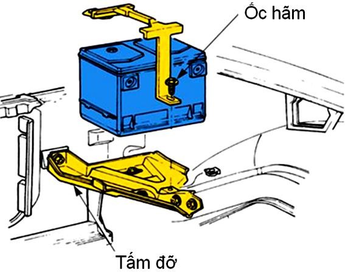
-
Các bước tiến hành.
Tháo ác quy trên xe xuống
- Phải xác định được dây nối mass
- Tháo dây nối mass
- Tháo dây còn lại
- Tháo cơ cấu cố định
- Lấy ác quy ra khỏi xe 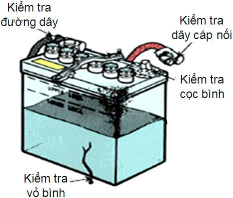
Kiểm tra bằng trực quan.
- Kiểm tra nứt vỡ vỏ bình, cọc, dây dẫn.
- Kiểm tra đứt cáp hay mối nối và thay thế nếu cần thiết.
- Kiểm tra giá giữ ắc quy siết lại.
Vệ sinh công nghiệp.
- Vệ sinh bên ngoài.
Sử dụng giẻ sạch lau chùi bên ngoài ắc quy (a) cũng có thể sử dụng chổi lông mềm và nước xà phòng loãng để vệ sinh (b).
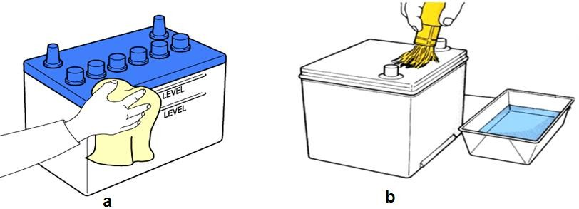
Hình 2.1: Vệ sinh bên ngoài ắc quy.
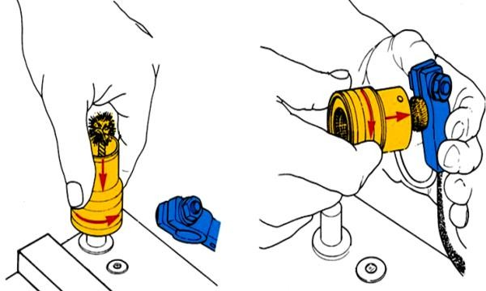
-
Vệ sinh cực và kẹp cực. Tháo kẹp ra khỏi cực.
Sử dụng chổi chuyên dụng có đầu lồi và đầu lõm, lau cực và kẹp cực.
Kiểm tra bảo dưỡng.
-
Kiểm tra mực dung dịch điện phân trong ắc quy.
Đối với bình ắc quy có vỏ bình có thể quan sát dung dịch điện phân từ bên ngoài ta quan sát lượng dung dịch phải không được lớn hơn vạch tối đa và không được thấp hơn vạch tối thiểu (a). Đối với bình ắc quy có vỏ bình không quan sát được ta mở nắp sử dụng cụ ống thuỷ tinh chuyên dụng để kiểm tra lượng dung dịch phải cao hơn các bản cực 1,5-2mm (b).
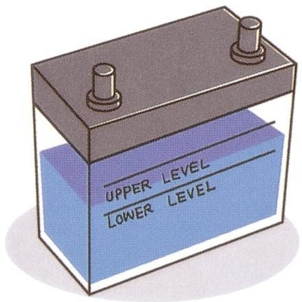 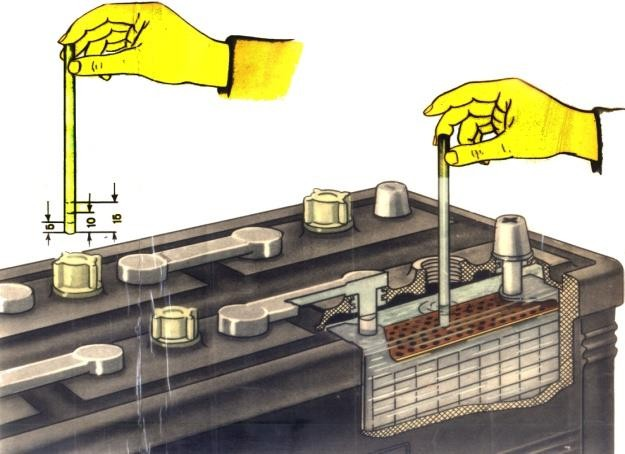
Hình 2.2: Kiểm tra mực dung dịch điện phân.
Kiểm tra tỉ trọng.
Tỉ trọng kế có thể được sử dụng để so sánh khối lượng chính xác của dung dịch chất điện phân với nước. Chất điện phân có nồng độ cao trong một bình ắc quy đã được nạp điện thì nặng hơn chất điện phân có nồng độ thấp trong bình ắc quy đã phóng hết điện. Dung dịch chất điện phân là hỗn hợp a xít và nước có tỉ trọng là 1.27.
Bằng cách đo tỉ trọng của dung dịch chất điện phân cho chúng ta biết bình ắc quy đang đầy điện, cần phaỉ sạc hay phải thay thế.
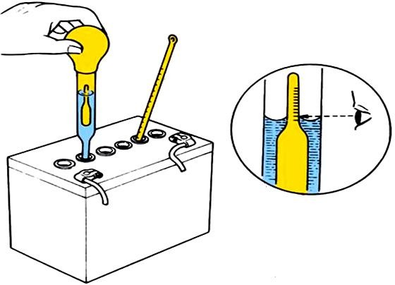
Trình tự kiểm tra tỉ trọng
- Mở nắp bình ắc quy.
- Bóp bầu hút của tỉ trọng kế và đưa cái đầu hút vào ngăn gần cực dương.
- Từ từ thả lỏng bầu hút, hút vừa đủ dung dịch điện phân để làm nổi đầu đo bên trong lên.
- Đọc tỉ trọng chỉ trên đầu đo.
- Ghi lại giá trị rồi thực hiện lặp lại quá trình cho các ngăn còn lại.
- Trong một số bình ắc quy không có nắp (bình chống bay hơi) thì tỷ trọng kế được gắn luôn vào trong bình. Ta có thế kiểm tra tỷ trọng của dung dịch bằng cách quan sát cửa xem tỷ trọng trên vỏ bình. Trong thực tế trên thị trường tồn tại hai dạng cửa xem tỷ trọng như hình dưới.
Qui trình quan sát cửa xem tỉ trọng:
- Đeo dụng cụ bảo vệ mắt thích hợp
- Quan sát quả cầu đo tỷ trọng dung dịch điện phân.
- Đưa ra kết luận
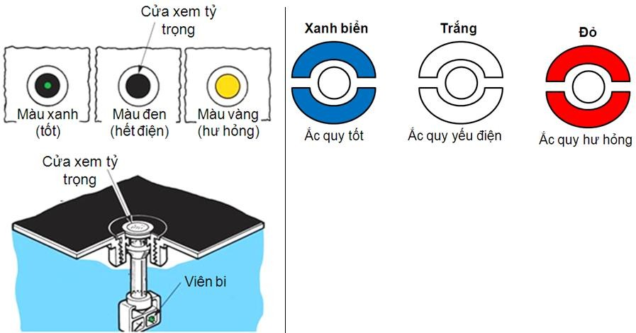
Hình 2.3: Qui trình quan sát cửa xem tỉ trọng.
Kiểm tra dòng rò, dòng kí sinh.
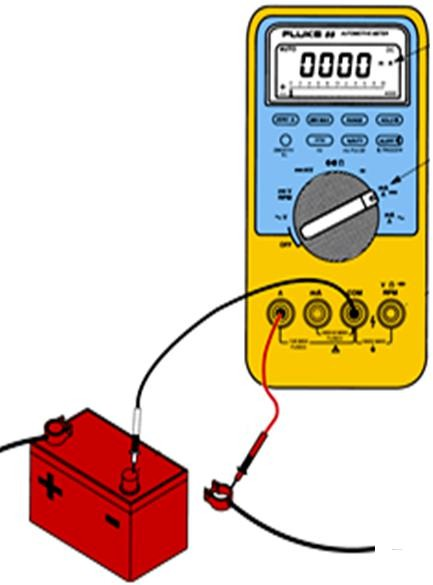
- Dòng kí sinh là những dòng nhỏ cần thiết để hoạt động các thiết bị điện khác nhau giống như đồng hồ, bộ nhớ máy tính, cảnh báo nó tiếp tục hoạt động khi xe đã ngừng, công tắc máy đã đóng. Tất cả các xe ngày nay đều có dòng kí sinh nó sẽ làm cạn bình ắc quy nếu không chạy xe và sạc định kỳ. Khi dòng kí sinh vượt quá 35mA.
- Dòng rò không mong muốn có thể là dòng kí sinh quá mức cho phép hay mặt trên của bình ắc quy bị ẩm, ô xy hóa quá mức sinh ra một đường dẫn giữa hai cực, gây ra dòng rò, thường lớn hơn 0.5 V. Đó gọi là dòng rò nắp bình
- Để kiểm tra dòng kí sinh quá mức hay tải kí sinh dùng ampe kế.
- Tất cả các tải điện trong xe đều tắt, cửa đóng và chìa khóa xe được rút ra khỏi ổ cắm.
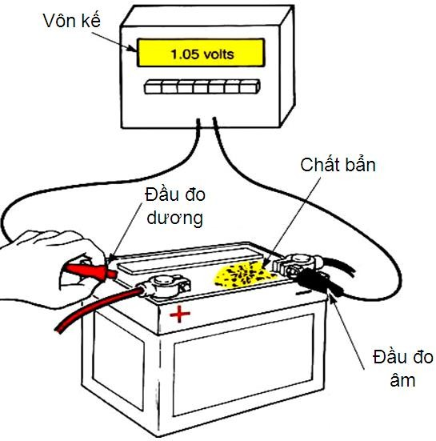
- Tháo một trong các cáp nối ra khỏi bình ác quy, gắn một ampe kế nối tiếp giữa cọc bình ác quy và cáp.
- Giá trị đọc được nên nhỏ hơn 35mA. Nếu lớn hơn dòng kí sinh đã vượt quá định mức.
- Kiểm tra ắc quy tự phóng điện (dòng rò trên nắp), sử dụng một đồng hồ volt kế loại số.
- Gắn que âm (màu đen) của đồng hồ vào cực âm của bình ác quy,
- Que dương (màu đỏ) vào mặt trên của vỏ ác quy.
- Nếu như điện áp lớn hơn 0.5V, rửa nắp bình ắc quy bằng dung dịch soda và nước, sau đó lau nước trên mặt bình.
Kiểm tra sụt áp ở kẹp cực.
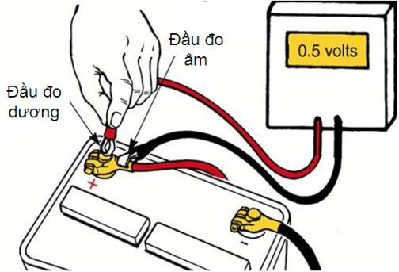
- Ô xít kim loại và ăn mòn gây ra điện trở lớn tại chỗ nối, gây ra điện áp rơi và giảm dòng điện qua các thiết bị.
- Cực bình ắc quy và kẹp cực nên được lau chùi mỗi khi kiểm tra ác quy.
- Để kiểm tra điện trở chỗ nối, thực hiện phép đo điện áp rơi khi khởi động xe. Điện áp rơi phải là 0V.
- Bất cứ giá trị đọc nào mà lớn hơn 0V đều phải lau chùi điểm và kiểm tra.
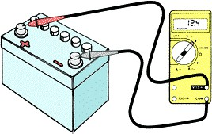
Kiểm tra điện áp hở mạch.
- Dùng một đồng hồ số để kiểm tra điện áp bình ác quy khi hở mạch.
- Bật đèn đầu lên pha trong vài phút để loại bỏ nạp bề mặt.
- Tắt đèn đầu và nối đồng hồ qua hai cực của bình ắc quy.
- Đọc giá trị điện áp. Một bình ắc quy được nạp đầy có giá trị 12.6 V. Ngược lại một bình ắc quy đã hỏng điện áp là 12V.
Kiểm tra khả năng chịu tải nặng của ắc quy.
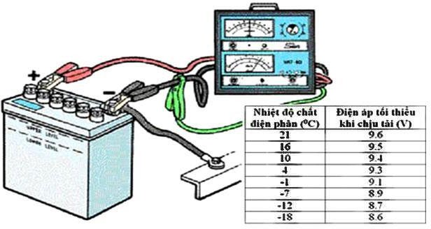
Hình 2.4: Kiểm tra khả năng chịu tải ắc quy.
Kiểm tra khả năng chịu tải nặng của ắc quy cho chúng ta biết khả năng phân phối dòng điện của ắc quy. Trước khi kiểm tra tải nặng phải xác định dung lượng bình ắc quy (dung lượng bình ác quy ghi trên nhãn bình)
Qui trình kiểm tra khả năng chịu tải nặng:
- Lắp đặt bộ thử tải.
- Tăng tải lên bằng núm điều khiển đến khoảng gấp 3 lần Ah. Duy trì tải không quá 15s, ghi nhận giá trị điện áp.
- Nếu điện áp đọc được 9.6V hay cao hơn, bình ác quy còn tốt. 9.5V hay thấp hơn, bình ắc quy có khiếm khuyết và cần thay thế.
Kiểm tra nắp bình ắc quy.
-
Thông lỗ thoát khí trên nắp, bên hông dãy nắp (đối với bình có dãy nắp liền) khi bảo dưỡng ắc quy.
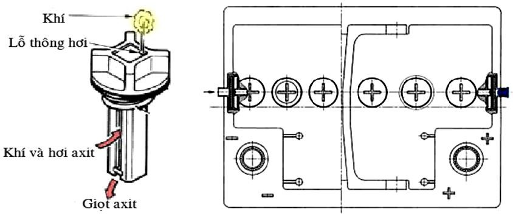
Hình 2.5: Nút và nắp bình ắc quy.
Thêm nước cho bình ắc quy.
Trong điều kiện bình thường thì nước không cần thiết, tuy nhiên cần thiết trong những trường hợp sạc lâu làm cho nước bốc hơi khỏi dung dịch chất điện phân. Khi thêm nước, chỉ thêm bằng nước cất.
Sạc bình ắc quy.
Không được nối đầu sạc hay gỡ ra trong trường hợp máy sạc đang bật. Làm theo những chỉ dẫn khi sạc của nhà sản xuất.
Không sạc một bình ắc quy khi mà dung dịch điện phân của nó đã đóng băng.
Bình ắc quy có thể được xem là hoàn toàn đầy điện khi tất cả các ngăn đều giải phóng ra khí và tỉ trọng của dung dịch điện phân không thay đổi trong hơn một giờ. Nạp chậm là 5 đến 10A trong khi nạp nhanh là 15A hay lớn hơn.
-
Luôn luôn mở nắp trong suốt quá trình sạc.
-
Luôn luôn làm theo những chỉ dẫn của nhà sản xuất.
-
Luôn luôn sạc bình ắc quy ở những nơi thông khí tốt, đeo bảo vệ mắt và găng tay.
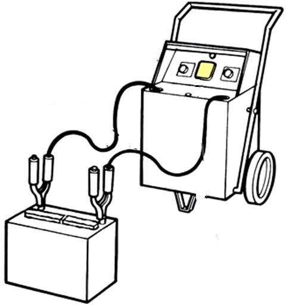 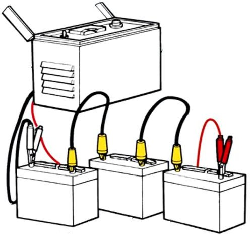
Hình 2.6: Phương pháp sạc bình ắc quy.
-
Luôn luôn tránh để gần tia lửa và ngọn lửa (Tránh hút thuốc gần).
-
Tỉ lệ nạp giống như khi phóng. ắc quy phóng nhanh thì nạp nhanh, phóng chậm thì nạp chậm (Nếu nghi ngờ thì thực hiện nạp chậm).
-
Không bao giờ sạc khi ắc quy đang lắp trên xe. Gỡ ắc quy rồi mới nạp.
-
Kiểm tra tỉ trọng dung dịch sau từng khoảng thời gian.
-
Kiểm tra nhiệt độ của ắc quy khi đang sạc bằng cách sờ tay vào mặt cạnh, nếu cao quá, ngừng sạc chờ nguội.
Kiểm tra tình trạng sạc.
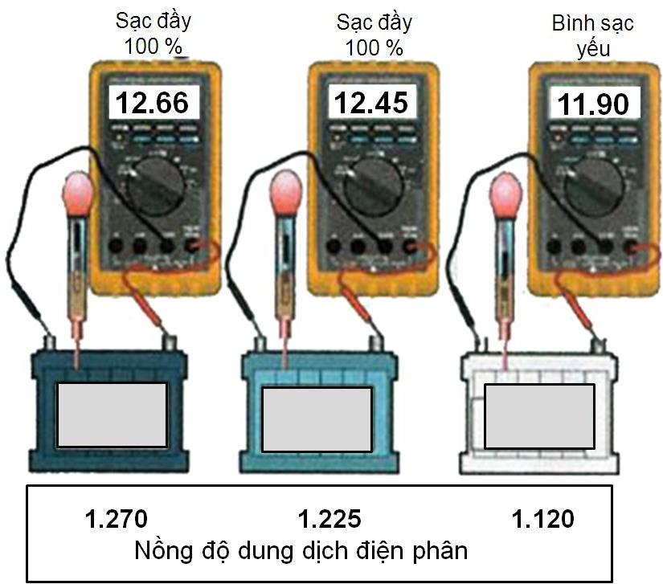
Hình 2.7: Kiểm tra tình trạng sạc ắc quy.
Kiểm tra tỉ trọng.
Đo tỉ trọng của dung dịch chất điện phân biết được bình ắc quy đang đầy điện, cần phaỉ sạc hay phải thay thế. Tỷ trọng 1,27 bình đầy điện 100%; 1,23 - 75%; 1,19 - 50%; 1,14 - 25%; 1,1 - 0%.
Sự chên lệch tỉ trọng của các ngăn không vượt quá 0.05. Sự chênh lệch so sánh giữa ngăn cao nhất và ngăn thấp nhất.
Đo điện áp hở mạch.
Điện áp 12,66V bình đầy điện 100%; 12,45V - 75%; 11,9V bình hư hỏng.
Khi bình ắc quy trên xe hết điện không có điều kiện sạc bình, ta có thể dùng bình ắc quy của xe khác còn đầy nối với bình ắc quy của xe hết điện thông quy dây nối (chú ý dây nối phải đủ lớn để tránh quá tải).
Tiến hành nổ máy sau đó tháo dây nối để máy phát nạp điện cho ắc quy.
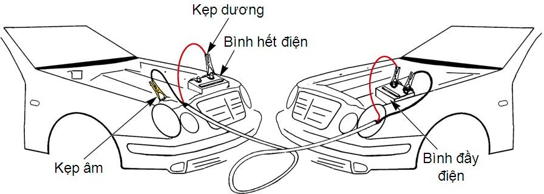
Hình 2.8: Phương pháp nối bình giữa hai xe.
Lắp bình ắc quy lên xe.
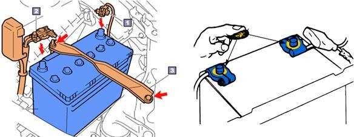
Hình 2.9: Phương pháp lắp bình ắc quy lên xe.
-
Lắp theo quy trình 1 - lắp cáp âm, 2 - lắp cáp dương, 3 - lắp thanh cố định.
-
Dùng mỡ chuyên dụng bôi một lớp mỏng lên các mối nối để chống ô xy hóa.
Một số điểm chú ý khi kiểm tra ắc quy trên xe.
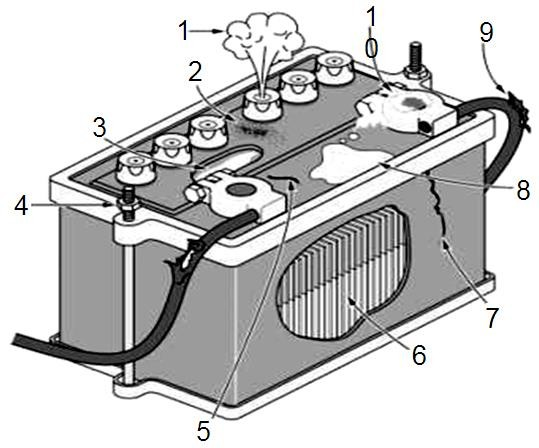
Hình 2.10: Bình ắc quy trên xe.
-
Nước bay hơi.
-
Cặn bẩn.
-
Đọng nước.
-
Ốc cố định lỏng.
-
Nứt vỡ nắp bình.
-
Mực nước dung dịch thiếu.
-
Nứt vỡ vỏ bình.
-
Chất bẩn do ô xy hóa.
-
Cáp nối hư hỏng.
-
Kẹp cực bị ô xy hóa.
-
Một số hư hỏng ắc quy.
Ắc qui tự phóng điện:
-
Trong ắc qui hình thành dòng điện cục bộ.
-
Nước đổ vào ắc quy không phải là nước cất.
-
Dung dịch điện phân pha chế từ axit sunfuric kỹ thuật.
-
Trong dung dịch điện phân có tạp chất cơ học, hữu cơ.
-
Dung dịch điện phân đổ quá mức.
-
Dòng điện bị rò theo khung vỏ ắc quy.
-
Dung lượng của ắc quy giảm.
-
Tỉ trọng của dung dịch điện phân ở một ngăn ắc quy có giá trị khác. Các bản cực bị sunfat hóa:
-
Ắc quy để lâu trong tình trạng phóng điện.
-
Ắc quy thường xuyên nạp điện thiếu.
-
Tỉ trọng dung dịch điện phân thấp hoặc cao.
-
Mức dung dịch điện phân thấp.
-
Các ắc quy đơn trong bộ ắc quy có dung lượng khác nhau.
-
Ắc quy hỏng do phóng điện lâu với dòng điện lớn. Những tấm cực của ắc quy bị hỏng:
-
Bắt ắc quy không chặt
-
Nhiệt độ dung dịch điện phân quá cao.
-
Những bản cực của ắc quy bị gẫy.
-
Dung dịch điện phân bị đóng băng.
-
Nạp điện cho ắc quy với dòng điện lớn trong thời gian dài.
-
Thế hiệu của máy phát cao.
-
Các vách ngăn của bình ắc qui bị nứt
-
Kiểm tra thế hiệu của bộ ắc qui bằng cách chập mạch “Theo tia lửa điện” Các tấm cực bị chập mạch:
-
Chất hoạt tính của những bản cực bị rơi.
-
Những tấm ngăn bị hư hỏng.
-
Ắc quy bị nóng quá mức.